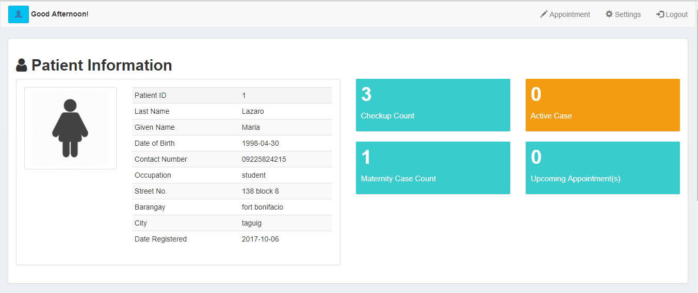
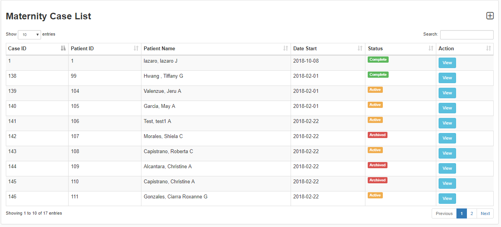
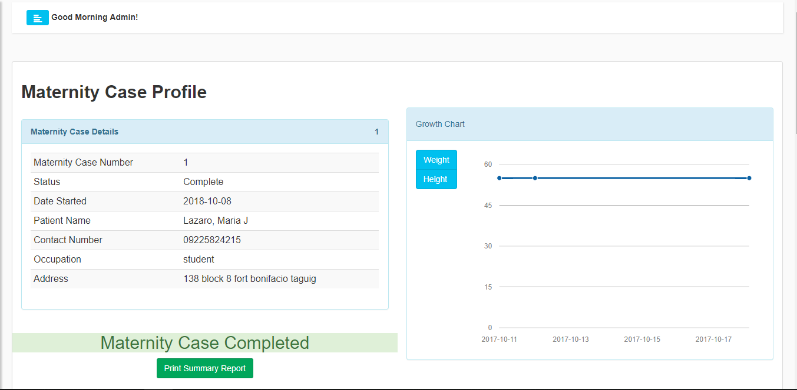

Jewel’s First Maternity Clinic Management System
Project Details
- Completed : March 2018
- Category : Management System
- Client : Jewel’s First Maternity Clinic
The Jewel’s First Maternity Clinic is located at 136 Block 8 Zone 2 Brgy. Fort Bonifacio, Taguig City. Its second branch is located at 131, Lot 8, Meralco road Upper Bicutan, Taguig City. It’s a private maternity facility that performs clinical and maternal duties to their patients for almost 8 years and founded by Mrs. Remedios A. Saludes, R.M. This maternity clinic is still using the old process of paper system in their recording process. Using papers in recording patient’s information, checkup results, and transaction records, piles of records are stored in their respective filing cabinet. It causes a slow retrieval of files and sometimes misplacement of some records due to overloading of files in the filing cabinet. The process of generating of report, too, takes time because the staff-in-charge needs to retrieve a record and create a report using pen and papers. Patients can only know the availability of their desired appointment when they ask the in-charge midwife about it.
- 
- 
- 